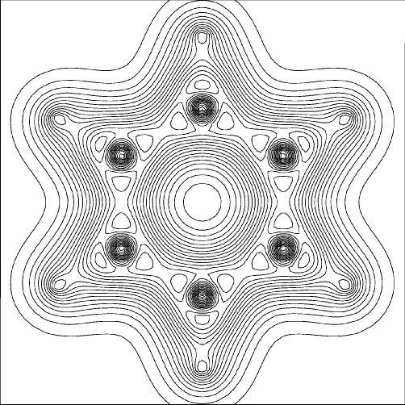
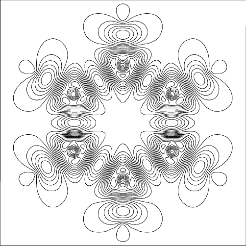
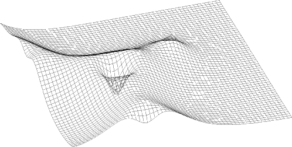
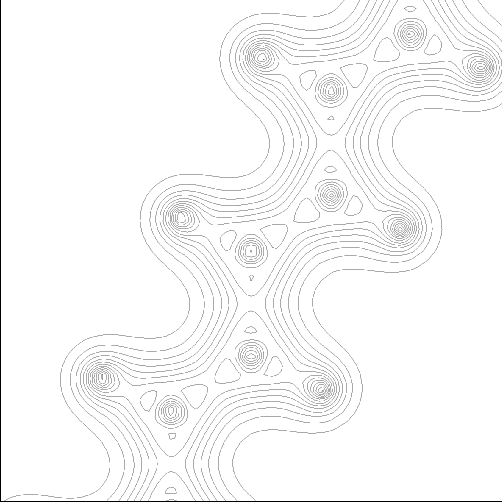
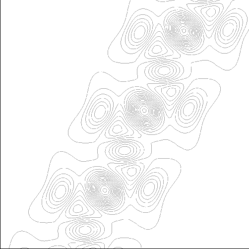
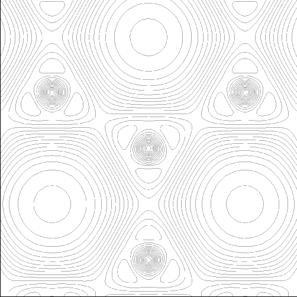

Next: Data Up: Calculation of Electron Previous: Bonds


Next: Data Up: Calculation of Electron Previous: Bonds
The program DENSITY is designed to generate maps of electron density distribution and molecular orbital intensity within molecules and solids. Two main modes of operation are provided: manual data input, which is a "stand-alone" mode, and normal input, which assumes the existence of large unformatted data-files produced by, e.g. MOPAC.
To generate the large unformatted data-file, MOPAC should be run using the key-word GRAPH. At present, MOPAC can only produce graphics files in the RHF mode, the UHF capability having not yet being written.
Figure 1:
Total electron density map for benzene|
 Keywords used are: CENTER=(0.7,1.2,0) LINE=(0.0,0.0,1.0) EDGE=6.0 Atom C1 is at the origin, C2 is at coordinates (0.0,1.39,0), and C3 is at (2.09,1.20,0). Note that, because the atomic orbitals of carbon have a node at the nucleus, the electron density at every carbon nucleus is almost zero. |
Figure 2:
Bonds map for benzene|
 Keywords used: CENTER=(0.7,1.2,0) LINE=(0.0,0.0,1.0) EDGE=6.0 BONDS Note the build-up of density between all bonded pairs of atoms. The six roughly triangular regions represent the loss of electron density, as do the six egg-shaped lobes on the hydrogens. In the center of the benzene ring, there is no significant gain or loss of electron density. |
Figure 3:
Detail of C-H bond in benzene|
 Keywords used: MULT=1 CENTER=(-0.27,-0.5,0) LINE=(0,0,1) EDGE=3 AXIS=.4 GRID NO-CONTOURS This type of plot is best viewed with the contours added in, but for the sake of clarity they have been omitted from this picture. |
Figure 4:
Total electron density map for polyacetylene|
 Keywords used are: CENTER=(0.0,0.0,0.0) LINE=(0,0,1) EDGE=7.0 The picture is centered on atom C1, and shows the 'join' of the central unit cell with the adjacent unit cell. Note that the 'join' is quite invisible. |
Figure 5:
Bonds map for polyacetylene|
 Keywords used: CENTER=(0.0,0.0,0.6) LINE=(0,0,1) EDGE=7.0 BONDS As with benzene, note the build-up of density between all bonded pairs of atoms. In order to show the strong p-bond, the center of the plot has been raised 0.6Å above the backbone chain. |
Figure 6:
Graphite, Total Electron Density|
 Keywords used: CENTER=(0.0,0.0,0.0) LINE=(0,0,1) EDGE=4.0 The center of the plot is at C1,1 in a 5 *5 array of atoms. The picture therefore shows the 'join' of four unit cells, cells (0,0), (0,-1), (-1,0), and (-1,-1). As with polyacetylene, the 'join' is invisible. |
Although DENSITY has a very simple data-input, users are warned that care is needed in precisely wording a request. As an example, in learning how to use DENSITY a user might want to plot the highest-filled porbital in benzene, and choose the plane to be that of the carbon atoms. At first sight this appears reasonable, but when one recalls that the psystem has a node in this plane, another choice of plane is seen to be essential. A better choice of plane would be one parallel to the plane of the carbon atoms, but 0.5 to 1.0 Ångstroms above it.
Similarly, if only a detail of the molecule is to be studied, it is wasteful to plot the whole molecule. The picture is essentially made up of 2,500 pixels, so fine detail can very easily be lost if the whole molecule is used.
With one important exception the whole program is written using the FORTRAN-77 standard, so translation to allow DENSITY to run on different machines should not be difficult. FORTRAN-77 does not support graphical functions, and an interface, designed to allow users to easily write their own interfaces, has been written. This interface is, of course, machine-dependent.


Next: Data Up: Calculation of Electron Previous: Bonds